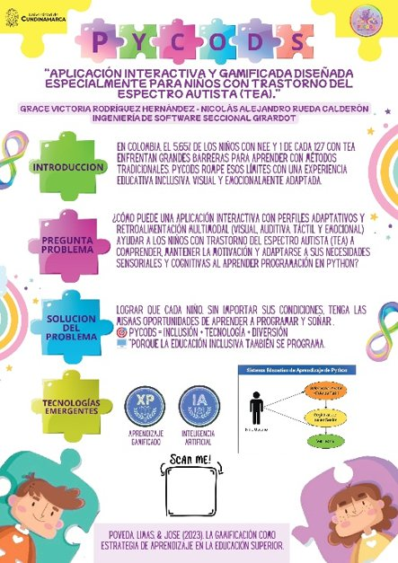
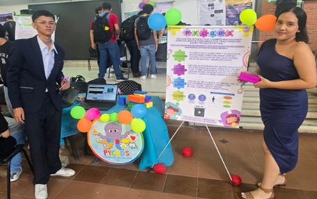
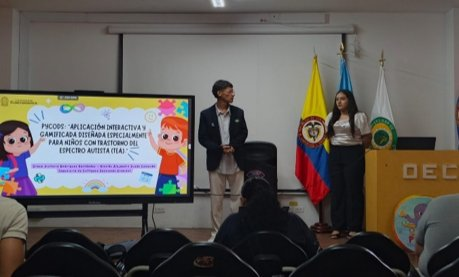
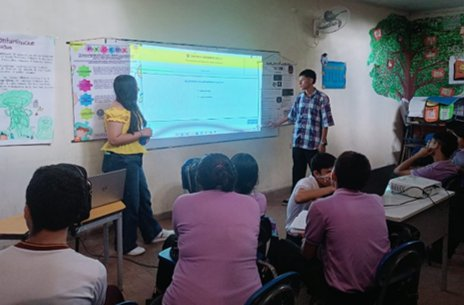

El proyecto Pycods fue presentado en diferentes espacios académicos e institucionales, demostrando su impacto como herramienta educativa inclusiva para niños con Trastorno del Espectro Autista (TEA).
Como parte de la divulgación académica del proyecto, se diseñó un póster oficial que resume la propuesta de Pycods: su introducción, pregunta problema, solución planteada y tecnologías emergentes utilizadas.

Pycods fue expuesto en la feria tecnológica organizada por la Universidad de Cundinamarca, donde se presentó la propuesta tecnológica ante la comunidad académica. Los asistentes pudieron conocer de primera mano el prototipo, sus funcionalidades y su enfoque inclusivo para niños con TEA.

El proyecto fue presentado en el X Congreso Internacional de la Ingeniería en la sede Fusagasugá de la Universidad de Cundinamarca, donde se socializó el prototipo y el desarrollo de una herramienta inclusiva para los niños con TEA ante una audiencia académica nacional e internacional.

Pycods también fue presentado en colegios del municipio de Melgar, Tolima, donde se dio a conocer esta herramienta tecnológica y su importancia para la educación inclusiva. Esta visita permitió acercar el proyecto a docentes y estudiantes del contexto regional, validando su pertinencia fuera del ámbito universitario.
